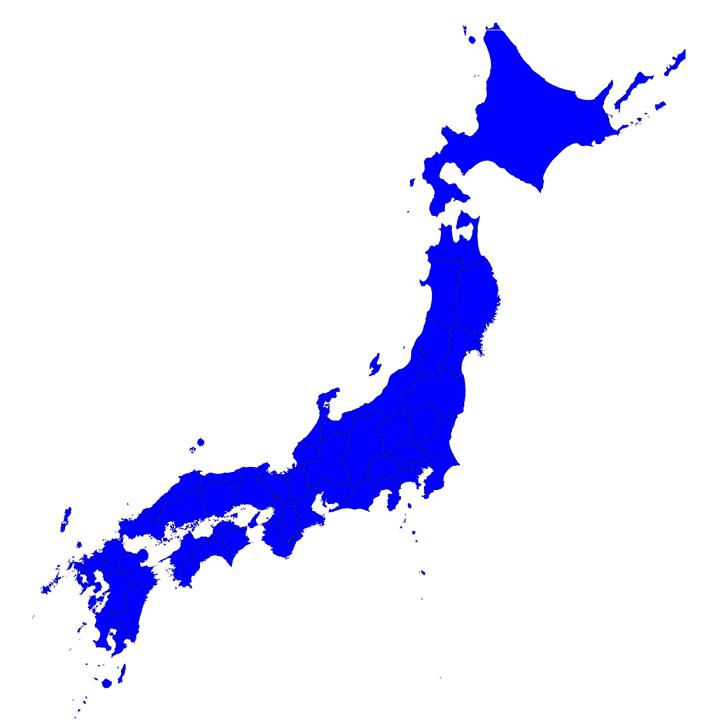
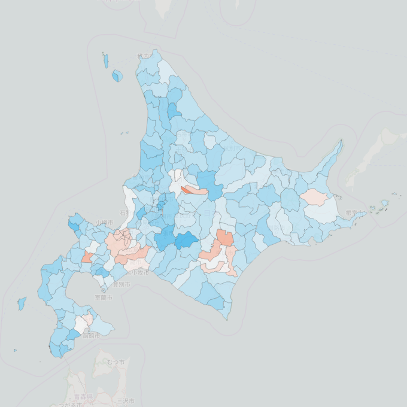
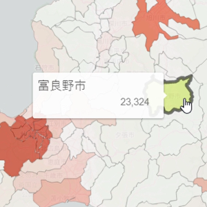
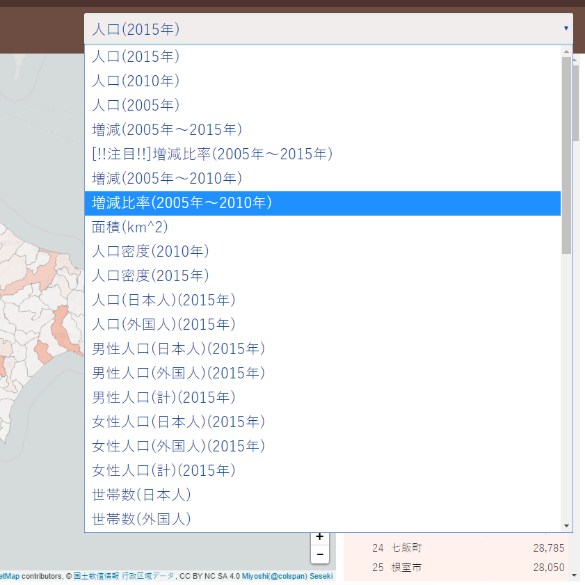
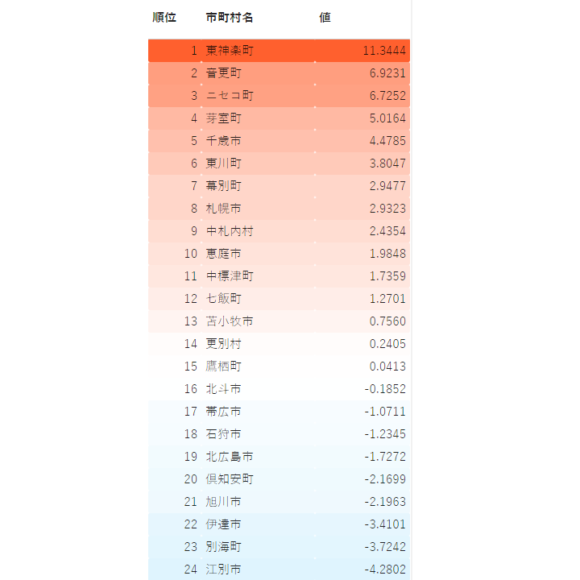
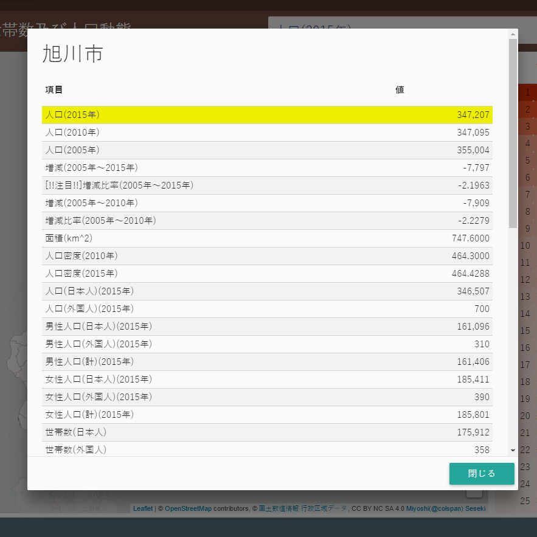
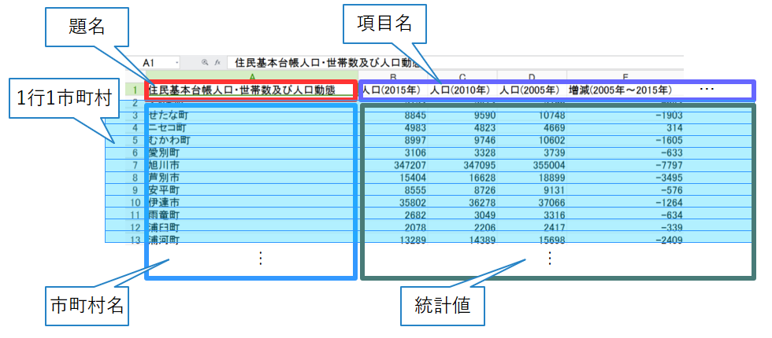
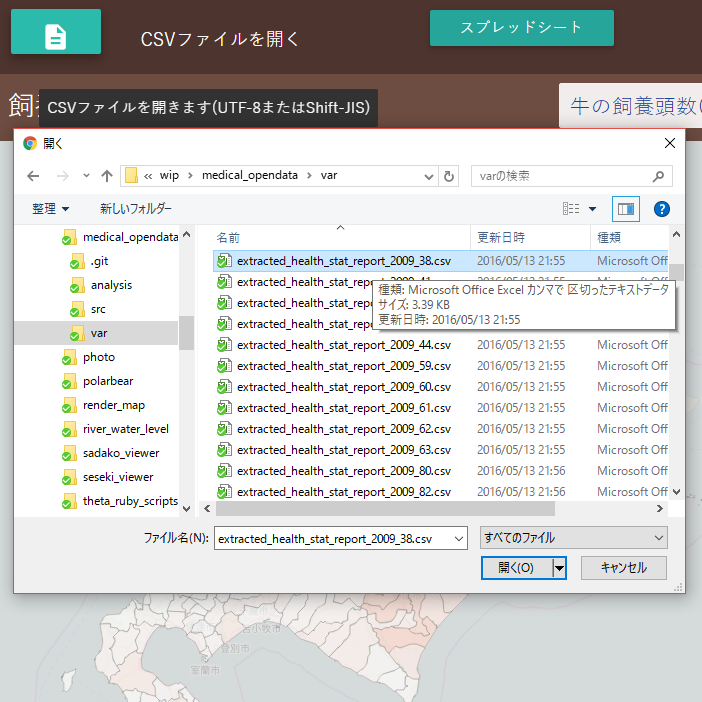

47都道府県対応
北海道から沖縄まで、日本全国の都道府県に対応しています(都道府県単位または複数の組み合わせで表示できます)。

ヒートマップ表示
入力された統計値をもとに各市町村に自動的に色付けさます。

市町村名表示
各区画かランキングの市町村名をマウスでポイントすると対応する市町村名が表示されます。

項目選択
入力されたCSVファイルの表示対象列を簡便に切り替えられます。

ランキング表示
選んだ項目におけるランキングが表示されます。

個別詳細表示
各区画かランキングの市町村名をマウスでクリックすると個別の統計値を一覧できます。
対応ファイル形式

事前にExcel等で作成した行方向に市町村、列方向に項目を並べたCSVファイルを入力できます。 (UTF-8またはShift-JISに対応)
サンプルデータ(動作例)
データ入力方法
データ入力方法は下記の2種類から選べます。

ファイル入力ダイアログボックス